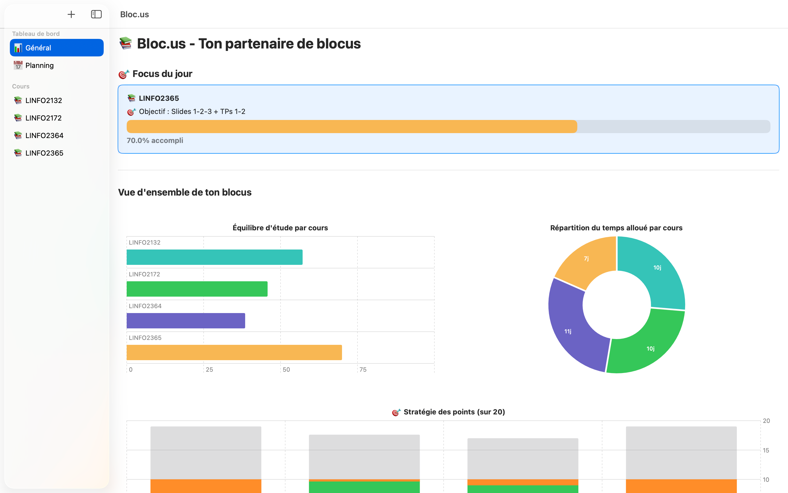
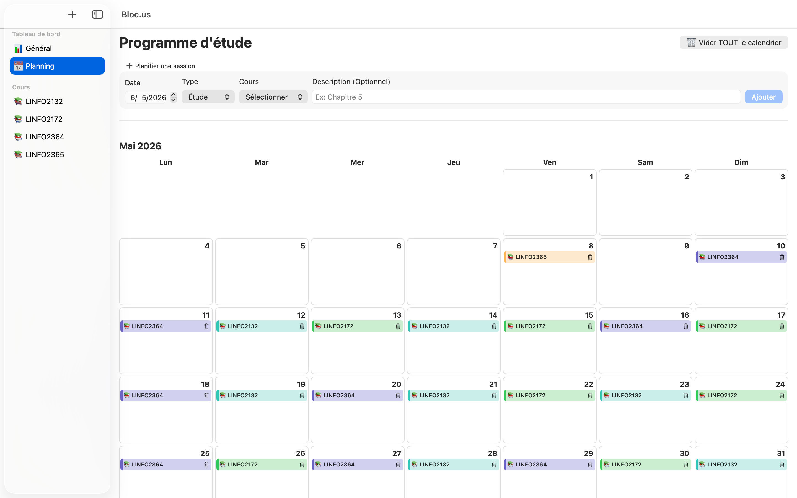
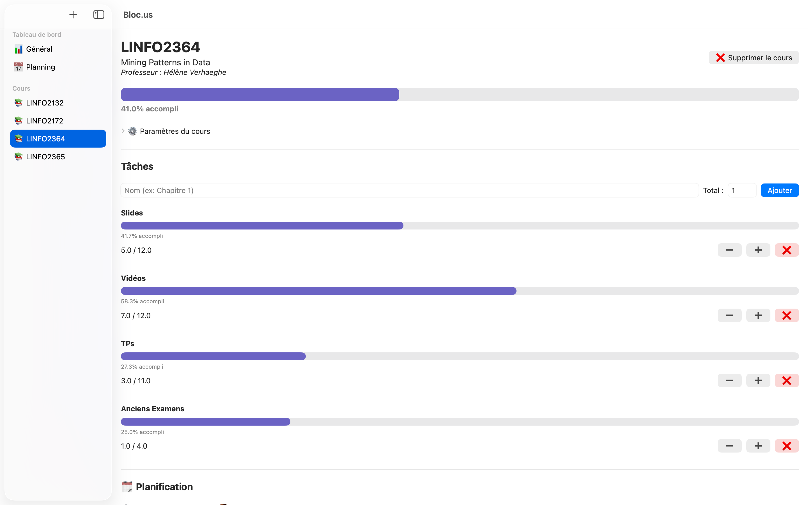
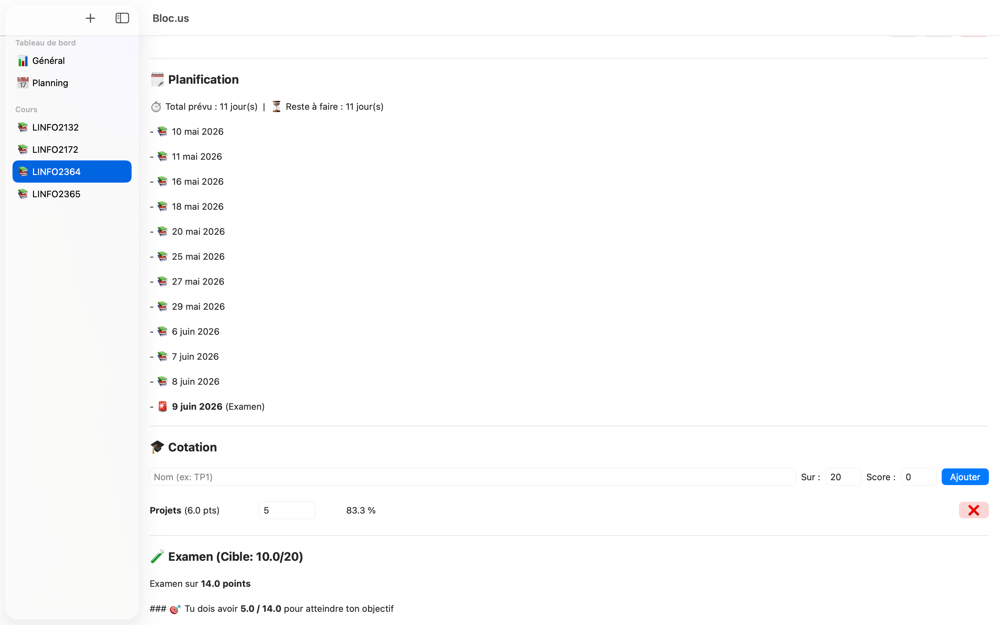
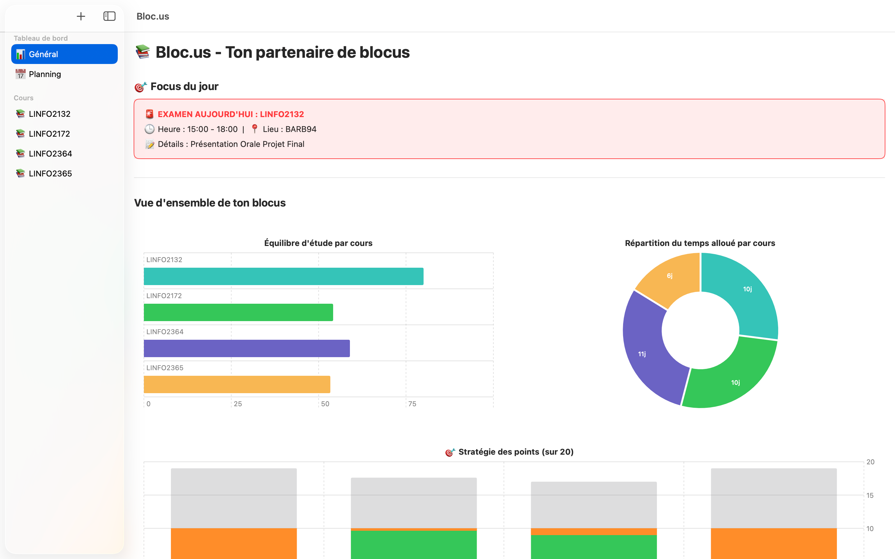
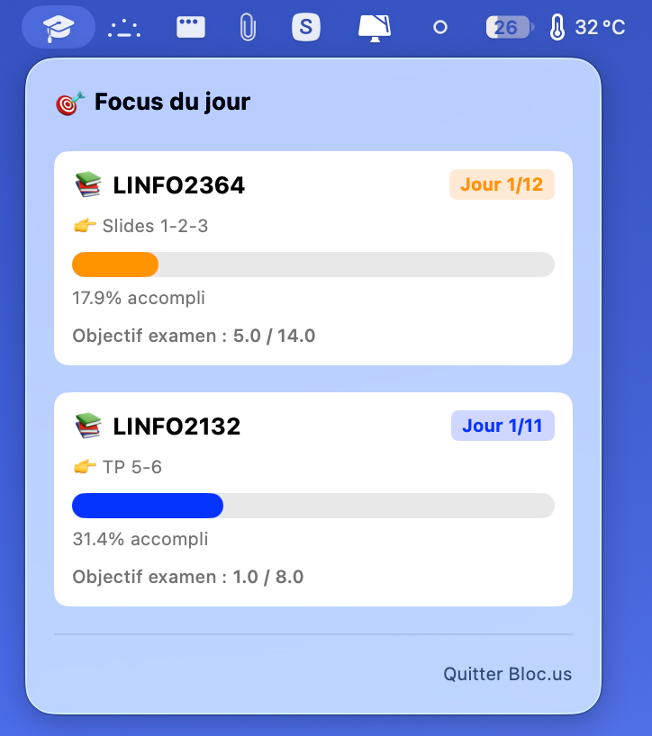
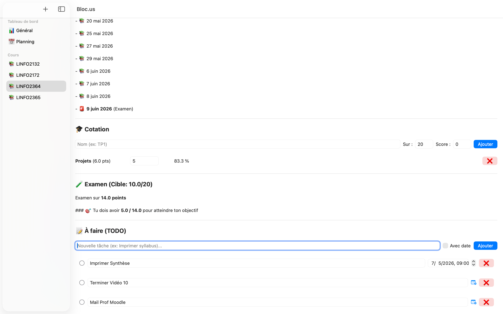
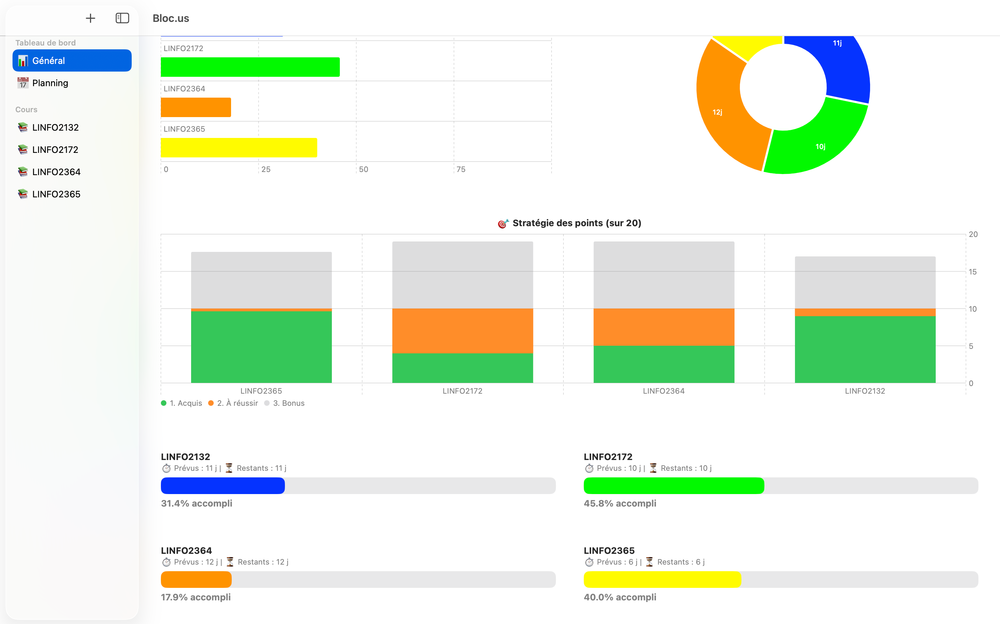

Planifiez, trackez et réussissez vos examens avec le tableau de bord ultime pour universitaires.
"Par les étudiants, pour les étudiants."
Tout ce dont vous avez besoin pour ne rien oublier, réuni dans une interface native et épurée.

Ne vous laissez plus submerger. Le Focus du jour filtre votre calendrier et vous montre uniquement les objectifs de la journée.
Visualisez d'un clin d'œil votre équilibre d'étude et la répartition de votre temps grâce à nos graphiques interactifs.

Planifiez vos sessions d'étude et vos examens en quelques secondes. Le calendrier interactif vous offre une vue globale sur votre mois.

Fini l'angoisse face à un cours énorme. Divisez chaque matière en petites tâches (Slides, Vidéos, TPs).
Savourez la satisfaction de voir vos barres de progression se remplir jour après jour vers les 100%.

Ne naviguez plus à l'aveugle. Entrez vos notes d'évaluation continue (TPs, Projets) et définissez votre propre objectif (ex: 10/20).
L'application calcule instantanément les points exacts qu'il vous reste à décrocher le jour de l'examen final.

Le jour J, l'application passe en mode alerte pour vous éviter toute panique de dernière minute.
Ouvrez l'application et retrouvez instantanément l'heure exacte et le local de votre épreuve pour arriver serein et concentré.

Inutile d'ouvrir l'application en grand. Un widget natif ultra-rapide se loge discrètement dans la barre des menus de votre Mac.
Cliquez sur l'icône pour voir instantanément votre focus du jour, le suivi de votre progression et la note visée pour chaque examen.

Parce qu'étudier un cours demande parfois des petites actions logistiques (imprimer le syllabus, envoyer un mail au prof, acheter un livre...).
Chaque matière possède désormais sa propre liste de tâches (TODO). Assignez des dates limites, cochez vos réussites et gardez l'esprit totalement libre.

Gardez le cap grâce à un suivi clair et précis. Le tableau de bord affiche les pourcentages d'accomplissement de chaque cours en un coup d'œil.
Suivez également le compte à rebours de vos jours d'étude prévus et restants pour toujours savoir où vous en êtes dans votre blocus.
"Franchement, cette app a sauvé mon blocus. Fini les fichiers Excel qui plantent ou l'agenda illisible. J'ouvre l'app le matin et je sais exactement ce que je dois faire."
Thomas
Bac 2 Ingénieur
"Le simulateur de points est un game-changer absolu. Savoir qu'il ne me manque que 4/14 à mon examen pour valider le cours enlève un stress énorme !"
Sarah
Master 1 Droit
"Visuellement super propre et ultra rapide sur Mac. L'organisation est presque devenue un jeu vidéo avec les barres de progression à remplir."
Maxime
Bac 3 Informatique
Tout ce que vous devez savoir avant de commencer votre blocus avec nous.
Oui, à 100%. Il n'y a aucun abonnement, aucune publicité, et aucun achat in-app. C'est un outil créé par un étudiant pour aider les autres étudiants.
Non, pas du tout ! Bloc.us fonctionne entièrement hors-ligne. Vous pouvez planifier votre session au fond de la bibliothèque sans aucun réseau Wi-Fi.
Uniquement sur le disque dur de votre Mac. Nous n'avons aucun serveur externe. Votre vie privée est garantie et personne ne peut voir vos notes ou votre emploi du temps.
Pour le moment, Bloc.us est une application macOS native développée en SwiftUI. Cependant, le projet étant open-source, une version web/Windows pourrait voir le jour via la communauté !
Absolument ! Le code complet de l'application est transparent et disponible sur mon dépôt GitHub. N'hésitez pas à y jeter un œil, proposer des améliorations ou laisser une étoile !
La sauvegarde est automatique et invisible ("Zéro Clic"). Dès que vous modifiez un élément, l'application enregistre tout instantanément. Vous pouvez fermer l'app l'esprit tranquille.
Rejoignez les étudiants qui ont déjà repris le contrôle de leur emploi du temps. Téléchargement gratuit et sans création de compte.
Télécharger Bloc.us (v2.0)Nécessite macOS 13.0 ou ultérieur.